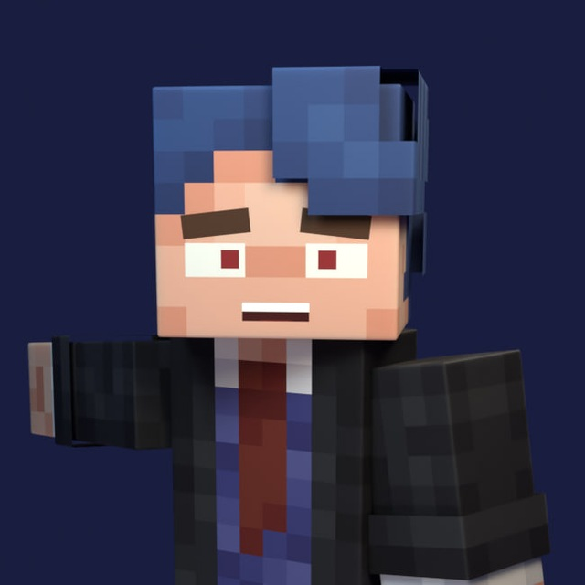

Vladislavvc
Автор · Карты · Датапаки · Модели
Здравствуй! Я vladislavvc, создатель достаточно популярных майнкрафт карт. Совсем недавно я создал карту "yoodexy mod", которая стремительно набирает популярность, сейчас я готовлюсь выпустить обновление к этой карте. Также, я занимаюсь созданием датапаков, моделей и карт на заказ. Работаю я в основном один. У меня в планах создавать больше творений которые понравятся людям, а также вам. Побольше узнать обо мне вы можете в моем телеграмм канале. Ссылка снизу.
← Назад к авторам
 МапДев Вики
МапДев Вики